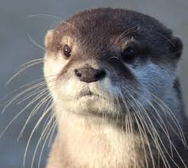
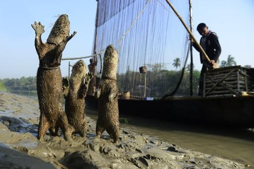

Home
Home
 Explore
Explore
 Notifications
Notifications
 Messages
Messages
 Profile
Profile
 More
More

38m
Just caught the biggest fish of the day! #OtterPride
10d
Just published a guide to building the coziest otter dens. Check
it out! https://ottertales.net/den-guide
#OtterLife #DenDesign
15h
Otter teamwork at its best—building our dam stronger together!

38m
Ready for a nap after a long day of swimming.
38m
Just basking in the sun ☀️ #OtterRelaxation